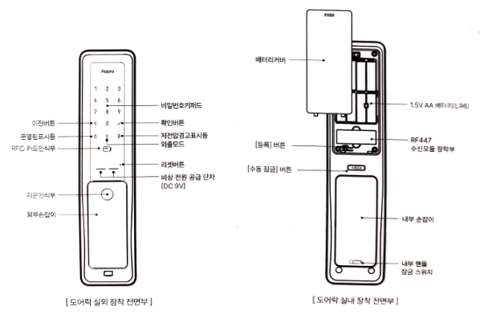
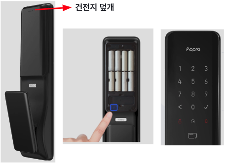
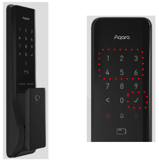
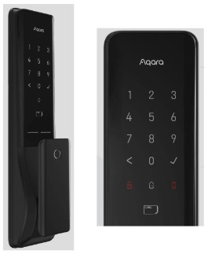
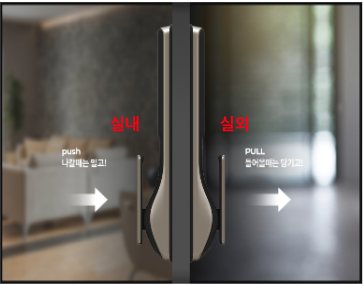
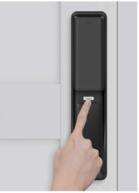
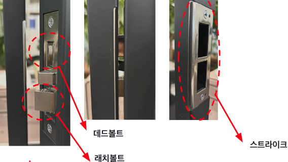
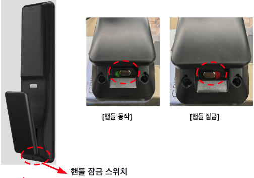
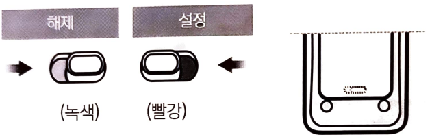
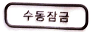

9 K100 - 기본 설명서
9.1 K100 영상 가이드
9.1.1 자가 설치 가이드
9.1.2 열림 방식 안내
9.1.3 Aqara Home앱 연동 방법
9.1.4 Apple Home앱 연동 방법
9.1.5 Google Home앱 연동 방법
9.2 제품 소개
9.2.1 K100 개요
스마트 도어락 K100은 지문, 비밀번호, 임시 비밀번호, 블루투스, 애플 홈킷 등 다양한 열림 방식을 지원하는 스마트 도어락입니다. Wi-Fi 네트워크에 연결하지 않고 디지털 도어락으로 사용하거나, 스마트 허브를 통해 Wi-Fi 네트워크에 연결하여 스마트폰으로 관리할 수 있는 스마트 도어락으로 사용하실 수 있습니다.
아카라홈 앱, 삼성 스마트싱스 앱, 애플 홈킷과 구글홈앱 등에 연결하여 아카라의 다양한 하위 디바이스와 함께 사용하시는 경우 다양한 스마트홈 시나리오를 구현할 수 있습니다.
9.2.2 제품 외관 및 사용자 인터페이스 구성

- 본 제품을 네트워크에 연결하여 스마트 도어락으로 사용하기 위해서는 반드시 해당 제품을 지원하는 스마트 허브가 필요합니다.
- 본 제품은 애플 홈킷을 지원하는 기기입니다. 원격 제어나 자동화 설정을 위해서는 애플TV (4세대 및 TV iOS 12.0 이상), iPad(iOS 12 이상) 또는 홈팟 등 홈 허브로 설정한 애플 기기가 있어야 합니다.
9.3 사용 전 준비
9.3.1 설치 주의 사항
도어락 설치는 전문 공구 사용을 필요로 하며. 안전을 위해 전문가에게 설치 의뢰하는 것을 권장합니다.
직접 설치로 인한 제품 손상 시 A/S 비용이 발생될 수 있습니다.
반드시 대리점 및 설치 기사에게 의로하여 설치 하시기 바랍니다. (설치 서비스 연락처: 1544-3413)
9.3.2 설치 후 사용준비
(1) 도어락의 배터리 커버를 열렁 1.5V AA배터리 8개를 장착해 주십시오.
배터리가 부족한 상황에서 계속 사용하는 경우 배터리 소진으로 도어락이 작동하지 않을 수 있습니다. 이런한 경우 임시 전원 9V를 공급하여 도어락을 작동시킬 수 있습니다.
(2) 초기 임시 번호는 123456입니다. “R” 버튼을 눌러 설정 모드에서 사용자를 등록해 주십시오.
사용자 등록 후 초기 비밀번호는 자동으로 삭제됩니다. 반드시 비밀번호를 기억하여 주십시오.
9.4 설치 후 동작 확인
9.4.1 전원 공급 (건전지 삽입) 및 도어락 부팅 확인

9.4.2 키패드 동작 및 초기 비밀 번호로 개폐 확인: 초기 비밀번호 123456+체크

9.4.3 스피커 출력 확인: 도어락 기기에서 사운드 출력 확인

9.4.4 핸들 동작 확인: 도어락 핸들의 Push and Pull 동작 반복

9.4.5 수동 버튼 동작 확인: 도어락 실내부 수동잠금 버튼으로 개폐 동작 확인

9.4.6 스트라이크와 모티스 걸림 확인: 문 개폐시 모티스 걸림 및 간섭 반복 확인

9.4.7 내부 핸들 잠금 스위치 동작 확인: 도어락 실내부 잠금 스위치로 핸들 동작 방지 확인

9.5 기본 기능
9.5.1 버튼 기능
(1) 실내 장착부[등록] 버튼 (이하 “[R] 버튼”)
[R] 버튼 짧게 누르기: 설정 모드
[R] 버튼 길게 누르기: 장치 리셋
(2) 실내 장착부 “내부 핸들 잠금 스위치”

본 기능을 통해 실내에서 원하지 않는 문 잠금 해제를 방지할 수 있습니다.
해당 기능을 활성화하면 실외에서만 문을 열 수 있습니다.
해당 기능 설정으로, 어린아이가 실내에서 실수로 문을 여는 상황을 방지 할 수 있습니다.
(3) 내부 강제 잠금 모드

본 기능을 통해 실외에서의 문 잠금해제를 방지할 수 있습니다. (디지털모드)
스마트 모드의 경우 외부에서 관리자 비밀번호/지문/NFC를 사용해 잠금을 해제 할 수 있습니다. 어린 아이들이 버튼을 터치하지 않도록 주의해 주세요.
내부 강제 잠금 모드 활성화: 문 잠금이 비활성화된 경우, [수동 잠금] 버튼 길게 누름(3초)
내부 강제 잠금 모드 비활성화: 내부 강제 잠금 모드가 활성화된 경우, [수동 잠금] 버튼 길게 누름(3초), 혹은 내부 핸들을 앞으로 밀거나 당기면 내부 강제 잠금 모드가 비활성화 됩니다.
9.5.2 도어락 열기
(1) 실외에서 지문으로 문 열기
지문 인식부에 등록된 지문을 접촉합니다. 인증이 완료된 후 손잡이를 밀거나 잡아 당기면 문이 열립니다.
(2) 실외에서 비밀번호로 문 열기
등록된 비밀번호를 입력하고 [✓] 버튼을 누릅니다. 인증이 완료된 후 손잡이를 밀거나 잡아당기면 문이 열립니다.
(3) 실외에서 스마트키로 문 열기
화면을 터치한 후 스마트키 입력부에 등록된 NFC 스마트키를 접촉합니다. 인증이 완료된 후 손잡이를 밀거나 잡아당기면 문이 열립니다.
(4) 실내에서 문열기
내부 핸들 강제 잠금 기능 설정되어 있는 경우, 해당 기능을 해제합니다. 문이 잠긴 상태에서 실내 몸체의 손잡이를 앞으로 밀거나 당기면 문울 열수 있습니다.
주의:
손잡이를 밀고 7초 이내에 문을 열지 않으면 문이 다시 잡깁니다.
(5) 항상 열린 모드
앱에 항상 열린 모드를 활성화한 후 도어락 키패드에서 “00+확인”을 입력하면 문이 닫힌 후 자동으로 잠기지 않습니다.
잠금 해제 모드에서 수동 잠금 또는 확인 버튼을 사용하여 수동으로 문을 잠그고, 잠금 후 잠금 해제 모드가 취소됩니다.
전환 방법: 아카라홈 앱 >> Smart lock K100 >> 우측 상단 >>> 통과 모드
9.6 빠른 설정
9.6.1 사용자 등록
사용자가 등록되면 초기 비밀번호 123456은 무효화 됩니다.
[R] 버튼을 눌러 설정 모드로 들어갑니다.
[1] 버튼을 눌러 사용자 등록 모드로 들어갑니다. 음성 안내에 따라 지문, 스마트키, 비밀번호를 등록합니다.
디지털 잠금 모드에서 사용자 번호는 02부터 시작하며 숫자 01은 최고 관리자 설정으로 삭제 할 수 없습니다.
9.6.2 사용자 삭제
[R] 버튼을 눌러 설정 모드로 들어갑니다.
[2] 버튼을 눌러 사용자 삭제 모드로 들어갑니다. 음성 안내에 따라, 사용자를 삭제합니다.
9.6.3 음량 설정
[R] 버튼을 눌러 설정 모드로 들어갑니다.
[3] 버튼을 눌러 음량 설정 모드로 들어 갑니다. 음성 안내에 따라, 음량을 설정합니다.
9.6.4 애플 홈킷 추가
[R] 버튼을 눌러 설정 모드로 들어갑니다.
[4] 버튼을 눌러 애플 홈킷과 연결 모드로 들어갑니다. 음성안내에 따라 애플 홈킷에 연결해 주세요.
9.6.5 RF447 모듈 등록 및 연결
송신기를 월패드에 설치합니다.
도어락 배터리 커버를 열고 RF447 수신모듈 장착부에 수신기를 정확히 장착해 주세요.
[R] 버튼을 눌러 설정 모드로 들어갑니다.
[5] 버튼을 눌러 연결 모드로 들어 갑니다.
송신기 “S” 버튼을 눌러 송신기와 수신기 연결을 완료하세요.
9.6.6 아카라 홈 등록 및 설정
제품 QR코드를 스캔하거나 앱스토어에서 “Aqara Home”을 검색하여 앱을 설치해 주세요.
[R]버튼을 눌러 설정 모드로 들어 갑니다.
[6] 버튼을 눌러 앱에 연결합니다.
아카라홈 앱을 실행하고 홈 화면 우측 상단의 ’+’를 눌러서 스마트 도어락을 선택하고 “Smart Lock K100”을 눌러 앱의 안내에 따라 도어락을 추가해 주세요.
9.6.7 SmartThings 등록 및 설정
앱스토어나 플레이스토어에서 SmartThings를 검색하여 앱을 설치해 주세요.
SmartThings용 허브가 등록되어 있는지 확인합니다.
SmartThings 앱에서 설치 자동 팝업의 안내를 이용하거나 앱 아래의 “기기” 탭을 선택하고 우측 상단의 기기 추가 버튼 ’+’를 눌러 안내에 따라 “Aqara 스마트 도어락 K100”을 추가해 주세요.
앱에 표시되는 안내에 따라 등록을 시작합ㄴ이다.
[R] 버튼을 눌러 설정 모드로 들어갑니다.
[6] 버튼을 눌러 앱에 연결합니다.
Samsung SmartThings 앱의 도어락 상세 페이지로 이동하여 앱의 안내에 따라 첫번째 사용자를 등록해 주세요 (관리자로 기본 설정)
9.6.8 도어락의 리셋
디지털 도어락 모드: [R] 버튼 길게 누름(3초) [✓] 누름
스마트 도어락 모드: [R] 버튼 길게 누름(3초) 관리자 암호 또는 지문 입력
네트워크가 연결되지 않은 상태에서 비밀 번호 인증 없이 도어락을 재설정할 수 있으며. 네트워크가 연결된 상태에서 도어락 재설정 시 관리자 비밀번호 또는 지문을 확인해야 하므로 관리자 비밀 번호 또는 지문을 보관해 주세요.
9.7 경보 기능
9.7.1 장난 방지 경보
등록되지 않은 지문이나 비밀번호, NFC 스마트키가 연속 3회 반복해서 입력되면 경고음이 발생하며, 연속 5회 반복해서 입력되면 경고음이 발생하면서 1분간 작동이 정지됩니다.
9.7.2 고온 감지 기능
화재가 의심될 정도의 높은 온도가 감지되면(62°C ± 10°C) 안전을 위해 강력한 경고음 발생과 함께 잠금 상태를 자동으로 해제합니다.
주의:
도어락 실내측 패널이 직사광선에 장시간 노출되면 경고음이 발생할 수 있습니다.
내부 강제 잠금 모드에서도 잠금 상태를 자동으로 해제합니다.
고온에 지속적으로 노출되면 도어 잠금 장치가 잠기지 않습니다.
9.7.3 침입 경보
문이 잠긴 상태에서 비정상적인 문 열림이 감지되면 80 데시벨 이상의 경고음이 발생합니다.